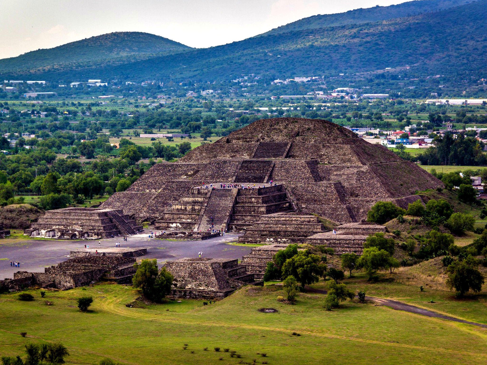
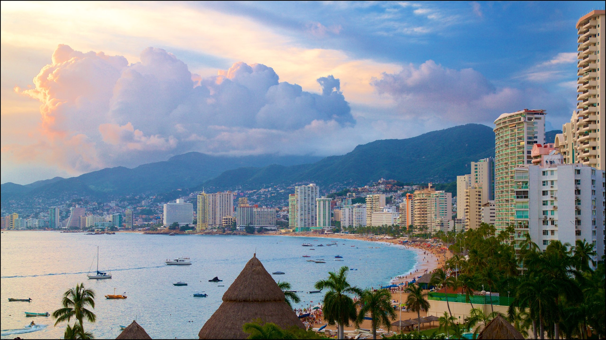

Imagenes de Mexico

Teotihuacan
Visita Teotihuacan con tu familia

Chichen Itza
Visita Chichen Itza con tu familia

Acapulco
Visita Acapulco con tu familia
Informacion sobre estos lugares
El área abierta a la visita pública tiene una extensión de 264 ha, donde se concentran los principales complejos de edificios monumentales como La Ciudadela y el Templo de la Serpiente Emplumada, la Calzada de los Muertos y los conjuntos residenciales que la flanquean, las Pirámides del Sol y la Luna, el Palacio de Quetzalpapálotl y cuatro conjuntos departamentales con importantes ejemplos de pintura mural como son Tetitla, Atetelco, Tepantitla y La Ventilla, además de otros dos conjuntos de corte habitacional denominados Yayahuala y Zacuala.
Chichén Itzá (en maya: Chi' ch'e'en (boca del pozo) its ja' ([de los] brujos del agua)) es uno de los principales sitios arqueológicos mayas de la península de Yucatán, en México. Se encuentra a escasos 2.5 km de la localidad de Pisté, en el municipio de Tinum, en el estado de Yucatán, al sureste del país. Consistió en una ciudad o un centro ceremonial que pasó por diversas épocas constructivas e influencias de los distintos pueblos que la ocuparon y que la impulsaron desde su fundación.
es una ciudad y puerto mexicano ubicado en el estado de Guerrero, en la costa sur del país, a 379 km de la Ciudad de México. Es la mayor ciudad del estado, constituyendo también la única zona metropolitana de este. Es cabecera del municipio homónimo y uno de los principales destinos turísticos de México. A nivel nacional, es la vigesimoquinta metrópoli más grande del país y la vigesimoseptima ciudad más poblada. Ciudad Renacimiento es la zona más extensa y superpoblada del puerto, de acuerdo con los últimos censos de población.